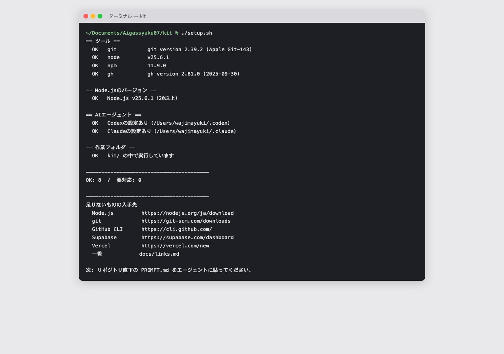
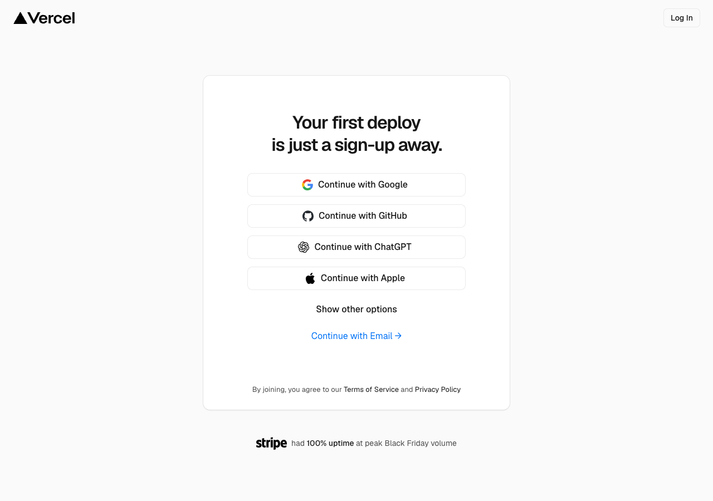
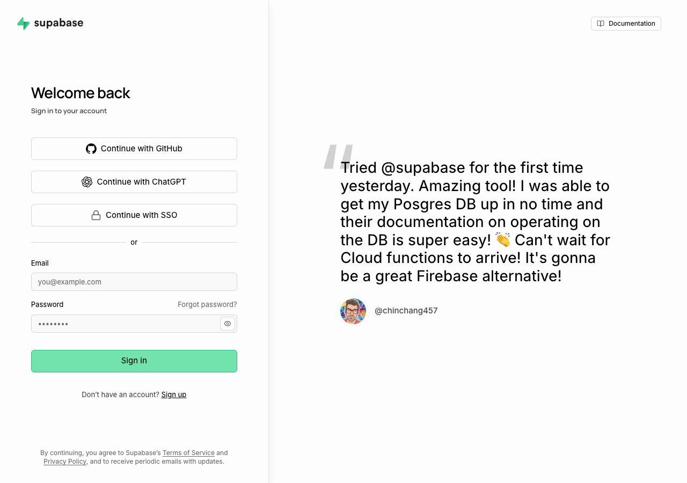

事前準備
当日は朝から自社のダッシュボードを作り始めます。インストールとアカウント作成は、ここで済ませてきてください。所要1〜2時間。
flowchart LR A["0 宿題
困りごとメモ"] --> B["1 Codexを入れる"] B --> C["2 Homebrew
ここだけターミナル"] C --> D["3 残りはAIに頼む
道具とキット"] D --> E["4 アカウント
GitHub・Vercel・Supabase"] E --> F["5 最終チェック
AIに頼む"]
料理教室の前の買い出しです。材料（困りごとのメモ）と道具（ソフトとアカウント）が揃っていれば、教室の時間を全部「作る」に使えます。
ターミナルの操作はほとんどありません。Codexを入れたあとは、青い枠のプロンプトをコピーしてCodexに貼れば、AIが代わりに実行します。詰まったら当日の10:00〜に拾う時間もあります。
0. 宿題: 困りごとをメモする（いちばん大事）
当日、AIがあなたの業務について質問します（grill-with-docs）。材料が多いほど、作るものが良くなります。インストールより、これがいちばん効きます。
| メモすること | 例 |
|---|---|
| (a) 困りごとを1つ以上 誰が、何に困っていて、何が見えると嬉しいか | 案件の進捗が誰にも見えず、毎朝口頭で確認している |
| (b) いま使っている帳票の項目名 スプレッドシートや紙の見出しをそのまま | 顧客名 / 担当 / 受付日 / 見積金額 / 状況 / 次アクション |
うまく書けないときは、ChatGPTやClaudeに次を貼ると、AIが質問しながら引き出してくれます。
私の仕事の困りごとを言語化したいです。業務で「面倒なこと」「誰にも見えていないこと」
「毎回確認していること」を一緒に掘り下げてください。
質問は番号付きでまとめて出し、それぞれに推奨回答を添えてください。個人情報や実データは持ち込まないでください。画面はダミーデータで作ります。項目名（見出し）だけで十分です。
1. Codexを入れてサインインする（10分）
openai.com/codex からCodexアプリを入れ、会社のChatGPTアカウントでサインインします。Claudeを使う人は claude.ai/download からClaudeのアプリを入れてください。
入れたら、Codexで 書類（Documents）フォルダを作業フォルダとして開いておきます。
2. Homebrewを入れる（Mac・10分）
Homebrewは「道具を入れる道具」です。パスワードの入力が要るので、ここだけはターミナルで行います。
ここだけターミナルで（Macのパスワード入力が必要なため）
/bin/bash -c "$(curl -fsSL https://raw.githubusercontent.com/Homebrew/install/HEAD/install.sh)"ターミナルは アプリケーション → ユーティリティ → ターミナル にあります。貼って return を押し、Macのパスワードを入れます（入力中は何も表示されませんが、入っています）。最後に「Next steps」と出たら、その下の2行も同じように貼って実行します。
Windowsの人はこの手順は不要です。次の3へ進んでください。
3. 残りの道具とキットは、AIに頼む（10分）
Codexに次を貼ります。Node.js・git・GitHub CLIを入れて、合宿のキットを取ってきて、足りないものがないか確かめてくれます。
AI合宿の事前準備をしています。次を順番にやってください。コマンドはあなたが実行してください。
1. Node.js（20以上）、git、GitHub CLI（gh）が入っているか確認し、無ければ入れる（MacはHomebrew、Windowsはwinget）
2. このフォルダに https://github.com/sento-group-inc/Aigassyuku07 をcloneする
3. Aigassyuku07/kit フォルダで ./setup.sh を実行し、結果を初心者にも分かる言葉で説明する
NG が出たら、直し方を1つずつ教えてください。
4. アカウントを作る（15分）
| サービス | 何に使うか | やること |
|---|---|---|
| GitHub | コードの置き場 | github.com/signup でアカウントを作る |
| Vercel | 本番URLで公開する | vercel.com/signup で Continue with GitHub |
| Supabase | データベースとログイン | supabase.com/dashboard/sign-in で Continue with GitHub |


クレジットカードは不要です。無料枠の範囲で作ります。会社で使うので、会社のメールで作るのがおすすめです。
最後に、手元のPCからGitHubを使えるようにします。ブラウザでのやり取りがあるので、ここもターミナルで行います。
ここだけターミナルで（ブラウザでのログイン確認が必要なため）
gh auth login質問には GitHub.com → HTTPS → Login with a web browser の順に、矢印キーと return で答えます。表示された8桁のコードを、開いたブラウザに入れます。
5. 最終チェック
Aigassyuku07/kit フォルダで ./setup.sh と ./setup.sh --check-services を実行して、
全部OKかどうかを教えてください。NG があれば直し方も教えてください。| 確認 | OKの状態 |
|---|---|
| 困りごとメモ | 困りごとの1文と、帳票の項目名がある |
| AIの答え | 「要対応: 0」で、GitHubが「サインイン済み」 |
| Vercel / Supabase | GitHubでサインインできる |
うまくいかないとき
| 症状 | 対処 |
|---|---|
Homebrewのあとに brew が見つからない | 「Next steps」の2行を実行し忘れている。ターミナルを開き直して、その2行を貼る |
| AIが「権限がない」と言う | Codexの画面に出る「許可」ボタンを押す。分からなければその画面のまま当日持ってくる |
| 会社のPCで管理者権限がない | 情報システム担当に「Homebrew・Node.js・git・GitHub CLI・Codexを入れたい」と事前に依頼する。間に合わなければ講師へ事前に連絡 |
覚えること（3つ）
- いちばん大事なのは困りごとのメモ。インストールより効く
- ターミナルはHomebrewとgh auth loginの2か所だけ。あとはAIに頼む
- 解決しなくても大丈夫。当日10:00〜で拾う